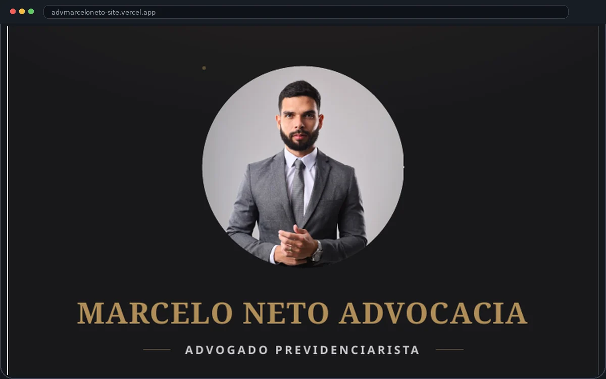

Marcelo Neto Advocacia
Uma central de atendimento digital desenvolvida para apresentar o trabalho de um advogado previdenciarista de forma clara e confiável, organizando os benefícios do INSS em uma estrutura simples de entender — e conduzindo o visitante até um contato real pelo WhatsApp.

Contexto
Marcelo Neto é advogado previdenciarista e atende trabalhadores, aposentados, pescadores artesanais e beneficiários do INSS. Grande parte do público que precisa desse tipo de atendimento chega até o profissional pela internet — mas frequentemente não entende com clareza quais direitos pode ter, nem quais documentos precisa reunir.
O projeto precisava traduzir um tema técnico e burocrático (direito previdenciário) em uma linguagem simples, sem perder a credibilidade que o assunto exige.
Objetivo
Criar uma central de atendimento capaz de apresentar o advogado de forma profissional, ajudar o visitante a identificar qual benefício previdenciário pode ter direito, e conduzi-lo até um primeiro contato — de forma humanizada e sem juridiquês.
Desafio
O público do escritório tem, em geral, baixo conhecimento técnico sobre o próprio direito previdenciário. O site precisava simplificar temas como aposentadoria, BPC/LOAS, benefício por incapacidade, salário-maternidade, pensão por morte e benefícios do pescador artesanal — sem parecer raso, e sem exigir que o visitante já soubesse o nome técnico do que precisava.
Solução
A estrutura foi organizada em blocos de benefício, cada um com um card próprio e um convite direto para solicitar uma análise gratuita. Um formulário de análise previdenciária guia o visitante por etapas curtas até o contato — reduzindo a fricção de quem não sabe exatamente qual é o próprio direito.
Design & Interface
A comunicação visual prioriza clareza e confiança: hierarquia direta, blocos de benefício fáceis de escanear e uma apresentação humanizada do advogado logo nas primeiras dobras da página, reforçando que existe uma pessoa real por trás do atendimento.
Responsividade
Como boa parte do público chega por links compartilhados no WhatsApp e redes sociais, o site foi construído com prioridade para a experiência em celular — formulário, cards de benefício e botões de contato adaptados para telas pequenas sem perder legibilidade.
Resultado & entrega
O projeto foi publicado como a central de atendimento oficial do escritório, reunindo apresentação institucional, benefícios previdenciários, fluxo de análise gratuita e canal direto de contato em um único lugar.
Visitar projeto publicadoQuer uma central de atendimento como essa para o seu negócio?
Conte um pouco sobre o seu projeto e vamos entender juntos o melhor caminho.